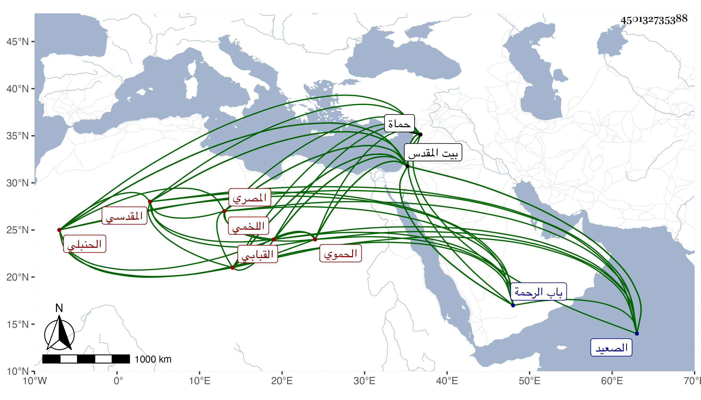

0902Sakhawi.DawLamic.ITO20230111-ara1.EIS1600.450132735388
Biography ID: 450132735388
302
عبد الرحمن بن عمر بن عبد الرحمن بن حسن بن يحيى بن عمر بن عبد المحسن الزين أبو زيد وأبو هريرة بن السراج أبي حفص بن النجم اللخمي المصري الحموي الأصل القبابي ثم المقدسي الحنبلي ويعرف بالقبابي بكسر القاف وموحدتين نسبة لقباب حماة لا للقباب الكبرى من قرى اشموم الرمان بالصعيد وان جزم به بعض المقادسة لمشي جماعة منهم الذهبي على الأول فالله أعلم . ولد في ليلة ثالث عشر شعبان سنة تسع وأربعين وسبعمائة ببيت المقدس ومات أبوه في سنة خمس وخمسين ونشأ ابنه فحفظ القرآن واشتغل بالفقه حنبليا كأبيه وجده ورأى الشيخ علي العشقي شيخ الشيخ عبد الله البسطامي واستجازه ولبس منه الخرقة وأسمع على أبيه وابن النجم وابن الهبل وابن أميلة والبياني والصلاح ابن أبي عمر وابن السوقي والشمس بن المحب والعماد بن الشيرجي وناصر الدين ابن التونسي وزينب ابنة قاسم بن العجمي في آخرين منهم الحافظان العلائي وابن رافع والفقيه الشمس بن قاضي شهبة والخطيب الشمس المنبجي والجمال يوسف السرمري وأحمد بن علي بن حسن الحطاب أبوه وعمر بن أرغون وأحمد ابن سالم بن ياقوت واقش وبكتاش في آخرين ، وأجاز له التقي السبكي والكمال النشائي والجمالان الاسنائي وابن هشام النحوي والجمال أبو بكر بن الشريشي والميدومي وابن القيم وابن الخباز وأبو المحرم القلانسي ومظفر الدين العطار وأبو الثناء محمود المنبجي ومحمد بن اسماعيل بن الملوك ومحمد بن اسماعيل بن عمر الحموي وناصر الدين الفارقي وفخر الذوات محمد بن أبي البركات النعماني صاحب النووي وابن خلكان وغيرهما ومحمد بن عبد الحق بن عبد الكافي السعدي صاحب ابن دقيق العيد وغيرهم والبدر بن فرحون مؤلف الطبقات وغيرهما وجماعة من الأعيان تجمعهم مشيخته التي خرجها له شيخنا وأدرج في تاريخه جمعا ممن أجاز له وهم السبكي والخلاطي والعز بن جماعة ومغلطاي وابن نباتة في شيوخ السماع سهوا والصواب ما أثبته وكذا ذكر غيره في شيوخ السماع الشهاب أبو محمود والميدومي وابن كثير والتقي بن عرام وبادار القونوي الضرير وابن زباطر وأحمد بن عبد الرحمن المرداوي وخلق ومن شيوخ الاجازة التاج السبكي وأخوه البهاء وممن أفرد شيوخه بالسماع والاجازة أيضا ابن ناصر الدين وسيأتي له ذكر في عبد الرحمن بن محمد ابن عبد الرحمن بن سليمان ، وقد حدث بالكثير أخذ عنه القدماء وألحق الصغار بالكبار والأحفاد بالأجداد وممن أخذ عنه من الحفاظ الجمال بن موسى المراكشي والتاج بن الغرابيلي وانتقى عليه والعماد اسماعيل بن شرف والموفق الأبي وابن أبي الوفا وعبد الكريم القلقشندي وأبو العباس القدسي والنجم بن فهد ونسيم الدين عبد الغني المرشدي وغيرهم من الرحالة كالشمس بن قمر واستدعى لي منه الاجازة جوزي خيرا فقد انتفعت بها ، وكان شيخا خيرا متيقظا منورا حافظا على التلاوة والعبادة حريصا على ملازمة وظائفه ببيت المقدس محبا في الحديث وأهله يحث من يتعلق به على المواظبة عليه وهو من بيت علم ورواية ذكره شيخنا في معجمه وقال أجاز لنا غير مرة ، والمقريزي في عقوده وفي أصحابه الآن كثرة سيما ببيت المقدس والخليل كالكمال بن أبي شريف وان بقي الزمان ربما يبقى من يروي عنه ولو بالاجازة لنحو العشر من القرن العاشر . مات في يوم الثلاثاء سابع ربيع الثاني سنة ثمان وثلاثين ببيت المقدس ودفن بجانب أبيه بمقبرة باب الرحمة ونزل الناس في كثير من المرويات بموته درجة رحمه الله وإيانا .
